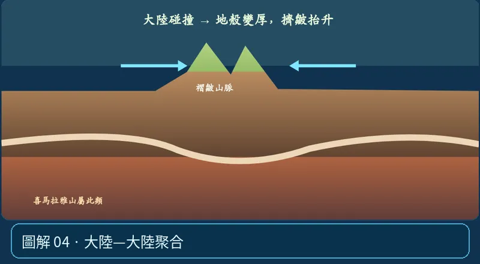

第 05 單元｜圖解 4/8｜課本 p.80–88
大陸—大陸聚合
大陸岩石圈密度較低，不易大量深沉，通常擠皺、增厚，形成高山與高原，例如喜馬拉雅山。
① 看一眼② 操作圖③ 自己推理④ 揭開解答
🔬 這張圖，請自己動手試
操作圖上方的頁籤、滑桿或按鈕；圖片也能左右滑動放大觀看。
互動圖解 · 大陸—大陸聚合

原創 SVG 地科教學模型，方便理解，非真實比例、非即時地震資料；互動無法載入時仍有靜態圖。
STEP 01 · 先觀察
👀 眼睛先找線索
選「陸－陸碰撞」，比較沒有長串下沉海洋板塊時，地表岩層如何被擠皺變厚。
💡 為什麼是這樣？
兩側大陸岩石圈浮力較大，碰撞常造成地殼增厚、褶皺與巨大山脈；喜馬拉雅山是代表例子。
🎯 換個問法想一題
高山就一定是因為火山噴發堆起來嗎？
我想好了，點開看答案 ↓
不對。陸－陸碰撞可以擠壓抬升出巨大山脈。
⚡ 一句記住：兩塊大陸互撞